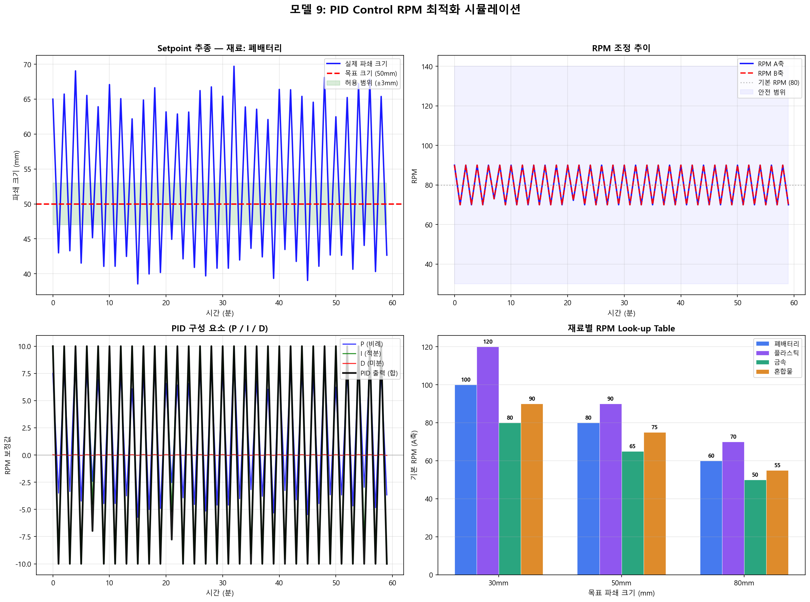

PID Control RPM 최적화
룰 기반 Look-up Table + PID 피드백 제어로 최적 파쇄 RPM을 실시간 결정
0 PID 제어란?
PID 제어의 핵심 개념
PID (Proportional-Integral-Derivative) 제어는 목표값(setpoint)과 현재값의 차이(오차)를 이용하여 출력을 자동으로 조정하는 피드백 제어 기법입니다. 산업 현장에서 가장 널리 사용되는 제어 알고리즘으로, 전체 산업 제어 루프의 약 95% 이상이 PID를 사용합니다.
왜 슈레더에 PID를 사용하는가?
| 이유 | 설명 |
|---|---|
| 안전 직결 | RPM 제어는 안전에 직결되므로 예측 가능하고 해석 가능한 방법이 더 안전 |
| 제어 변수 단순 | RPM 하나만 제어하면 되므로 복잡한 AI보다 PID가 더 안정적 |
| 즉시 이해 가능 | 현장 운전자가 "왜 그 RPM인지" 바로 이해 가능 |
| 검증 용이 | 룰 테이블을 직접 확인하고 수정 가능 |
실생활 비유
자동차 크루즈 컨트롤과 같은 원리입니다. 목표 속도 100km/h인데 현재 95km/h이면 가속 페달을 더 밟고(P), 오랫동안 목표에 못 미치면 더 강하게 밟고(I), 급격히 속도가 변하면 브레이크를 살짝 밟아 안정시킵니다(D).
2단계 제어 구조
본 시스템은 Look-up Table + PID 피드백의 2단계 구조로 설계되었습니다.
1 룰 기반 Look-up Table
재료별 기본 RPM 테이블
1단계에서는 재료 종류와 목표 파쇄 크기에 따라 기본 RPM을 결정합니다. 이 값은 실제 운전 경험을 바탕으로 설정되며, 운영 중 데이터 축적에 따라 갱신됩니다.
| 재료 | 목표 30mm | 목표 50mm | 목표 80mm | 비고 |
|---|---|---|---|---|
| 폐배터리 | 100 / 100 RPM | 80 / 80 RPM | 60 / 60 RPM | 표준 재료 |
| 플라스틱 | 120 / 120 RPM | 90 / 90 RPM | 70 / 70 RPM | 경도 낮음 → 고속 가능 |
| 금속 | 80 / 80 RPM | 65 / 65 RPM | 50 / 50 RPM | 경도 높음 → 저속 필요 |
| 혼합물 | 90 / 90 RPM | 75 / 75 RPM | 55 / 55 RPM | 평균적 설정 |
보간(Interpolation) 처리
목표 크기가 테이블에 정확히 없는 경우(예: 40mm) 인접 값 사이를 선형 보간하여 RPM을 결정합니다.
Python — 선형 보간
# 목표 40mm (30mm과 50mm 사이) ratio = (40 - 30) / (50 - 30) # = 0.5 rpm_a = 100 + 0.5 * (80 - 100) # = 90 RPM
보정 요소
- 칼날 마모 보정: 마모율이 높을수록 RPM 소폭 증가 (절삭력 보상). 마모 100% → +10 RPM
- 부하 보정: 부하율 85% 초과 시 RPM 감소 (과부하 방지)
2 PID 수식
PID 제어 수식
PID 제어기의 출력 u(t)는 오차 e(t)의 세 가지 성분(비례, 적분, 미분)의 합입니다.
u(t) = Kp · e(t) + Ki · ∫e(τ)dτ + Kd · de(t)/dt
| 항 | 수식 | 역할 | 효과 |
|---|---|---|---|
| P 비례항 | Kp · e(t) | 현재 오차에 비례하여 반응 | 오차가 클수록 강하게 보정. 빠른 응답 |
| I 적분항 | Ki · ∫e(τ)dτ | 누적 오차를 제거 | 정상상태 오차를 0으로 만듦 |
| D 미분항 | Kd · de(t)/dt | 오차 변화 속도에 제동 | 오버슈트 방지. 진동 억제 |
이산화(Discrete) 구현
실제 구현에서는 연속 시간이 아닌 이산 시간(매 60초)으로 계산합니다.
Python — PID 이산 구현
def compute(self, error, dt=60): # P (비례) p_term = self.Kp * error # I (적분) + Anti-windup self.integral += error * dt self.integral = clip(self.integral, -200, 200) i_term = self.Ki * self.integral # D (미분) derivative = (error - self.prev_error) / dt d_term = self.Kd * derivative output = p_term + i_term + d_term return clip(output, -10, 10) # RPM 보정 제한
Anti-windup이란?
적분항(I)은 오차가 오래 누적되면 값이 무한히 커질 수 있습니다(Integral Windup). 이를 방지하기 위해 적분값에 상한/하한을 두어 제한합니다. 본 시스템에서는 적분값을 ±200으로 제한합니다.
오차(Error) 정의
슈레더에서의 오차는 다음과 같이 정의됩니다:
e(t) = 현재 파쇄 크기 - 목표 파쇄 크기
- e > 0 (현재가 목표보다 큼): RPM 증가 → 더 잘게 파쇄
- e < 0 (현재가 목표보다 작음): RPM 감소 → 덜 파쇄
- e ≈ 0 (목표 근접): RPM 유지
3 튜닝 방법
PID 파라미터 튜닝 가이드
| 파라미터 | 기본값 | 효과 | 조정 방법 |
|---|---|---|---|
| Kp (비례) | 0.5 | 오차에 비례하여 즉시 반응 | 응답 느리면 ↑, 진동하면 ↓ |
| Ki (적분) | 0.05 | 누적 오차 제거 (정상상태 오차 0) | 정상상태 오차 있으면 ↑, 오버슈트 크면 ↓ |
| Kd (미분) | 0.1 | 오차 변화 속도에 제동 (진동 억제) | 진동 심하면 ↑, 응답 느리면 ↓ |
Ziegler-Nichols 튜닝법
PID 파라미터를 체계적으로 설정하는 대표적 방법입니다. 수동 튜닝이 어려울 때 초기값 설정에 유용합니다.
- Ki = 0, Kd = 0으로 설정 (P 제어만)
- Kp를 서서히 올려서 RPM이 진동하기 시작하는 Ku(한계 이득) 찾기
- 진동 주기 Tu 측정
- 최종 파라미터 계산:
Kp = 0.6 × Ku
Ki = 2 × Kp / Tu
Kd = Kp × Tu / 8
튜닝 시 주의사항
- 실제 슈레더에서 진동 테스트는 기계적 충격을 유발할 수 있으므로 소량 투입 상태에서 수행
- RPM 변경 속도 제한: 1회 최대 ±5 RPM (급격한 변화 방지)
- 재료 전환 시 PID 적분값 리셋 필수
4 시뮬레이션 결과
시뮬레이션 설정
| 항목 | 설정값 |
|---|---|
| 재료 | 폐배터리 (battery) |
| 목표 파쇄 크기 | 50mm |
| 초기 파쇄 크기 | 65mm (목표 대비 +15mm 초과) |
| 시뮬레이션 기간 | 60분 (1분 간격, 60 스텝) |
| PID 파라미터 | Kp=0.5, Ki=0.05, Kd=0.1 |
| 기본 RPM (Look-up) | A축=80, B축=80 |
결과 플롯
아래 그래프는 simulation.py 실행 시 생성되는 결과입니다.

그래프 해석
- 좌상단 — Setpoint 추종: 초기 65mm에서 시작하여 PID 제어를 통해 약 10~15분 내에 목표 50mm(±3mm)로 수렴합니다.
- 우상단 — RPM 조정 추이: PID가 오차에 따라 RPM을 자동 조정하는 과정입니다. 초기에는 크게 증가했다가 안정됩니다.
- 좌하단 — PID 구성 요소: P/I/D 각 항의 기여도를 시간에 따라 보여줍니다. 초기에는 P항이 주도하고, 시간이 지나면 I항이 잔류 오차를 제거합니다.
- 우하단 — Look-up Table: 재료별/목표크기별 기본 RPM을 막대그래프로 시각화합니다.
5 특징 / 장점 / 단점
특징
- Feedback Control: 실시간 피드백 기반으로 오차를 지속 보정
- Deterministic: 동일 입력에 대해 항상 동일 출력 (예측 가능)
- 2단계 구조: 룰 기반 초기값 + PID 미세 조정
- 투명성: 현장 운전자가 동작 원리를 즉시 이해
장점
- 검증된 이론: 100년 이상의 제어 이론, 수학적으로 안정성 증명 가능
- 실시간 제어: 추론 시간 < 100ms, 매 1분마다 즉각 반응
- 안정성: 적절한 튜닝 시 오버슈트 없이 수렴
- 데이터 불필요: 학습 데이터 없이 즉시 적용 가능
- 현장 수정 용이: Look-up Table 값 직접 변경 가능
단점
- 선형 가정: 비선형 시스템에서는 성능 저하 가능
- 튜닝 노력: Kp, Ki, Kd 파라미터 수동 조정 필요
- 단일 Setpoint: 하나의 목표값에 대해서만 최적 → 다중 목표 시 전환 필요
- 외란 대응 한계: 예측할 수 없는 급격한 변화에는 반응이 느릴 수 있음
다른 방법과의 비교
| 방법 | 복잡도 | 데이터 필요 | 해석성 | 적합 상황 |
|---|---|---|---|---|
| PID (본 모델) | 낮음 | 불필요 | 매우 높음 | 단일 변수, 실시간 제어 |
| 강화학습 (RL) | 높음 | 대량 필요 | 낮음 | 복잡한 다변수 최적화 |
| MPC (모델예측제어) | 중간 | 모델 필요 | 중간 | 미래 예측이 중요한 경우 |
| Fuzzy 제어 | 중간 | 전문가 지식 | 높음 | 비선형, 언어적 규칙 |
6 슈레더 적용
운영 흐름
매 1분 실행 흐름
매 1분: 1. 모델 8 → 파쇄 크기 예측 (예: 63mm) 2. 목표 크기 (50mm) 과 비교 → 오차 = +13mm 3. Look-up Table → 기본 RPM (80, 80) 4. PID 피드백 → RPM 보정 (+3.2) 5. 안전 인터록 검증 (범위, 변경폭, 부하) 6. PLC에 RPM 변경 명령 (83.2, 83.2) 7. 다음 1분 후 효과 확인 → 반복
안전 인터록
RPM 변경 전에 반드시 안전 검증을 수행합니다. 다음 중 하나라도 해당되면 RPM 변경을 차단합니다.
| 검증 항목 | 조건 | 조치 |
|---|---|---|
| RPM 범위 | 30~140 RPM 범위 초과 | 변경 차단 |
| 변경폭 제한 | 1회 ±5 RPM 초과 | 최대 ±5로 제한 |
| 과부하 | 부하율 > 90%에서 RPM 증가 | 증가 차단 |
| 끼임 감지 | 모델 4에서 끼임 감지 중 | 변경 전면 금지 |
도입 전략
- Phase 1 (1~2개월): 권고 모드 — RPM 변경을 화면에 "권고"만 표시, 운전자가 수동 적용
- Phase 2 (3~4개월): 반자동 모드 — 운전자 승인 후 자동 적용
- Phase 3 (5개월~): 자동 모드 — PID가 직접 PLC에 명령, 운전자는 모니터링
재료 전환 시 처리
- PID 적분값(I) 리셋 → 이전 재료의 누적 오차가 새 재료에 영향을 미치는 것을 방지
- Look-up Table에서 새 재료의 기본 RPM 즉시 적용
- PID 안정화까지 약 5~10분 소요 (과도 구간)